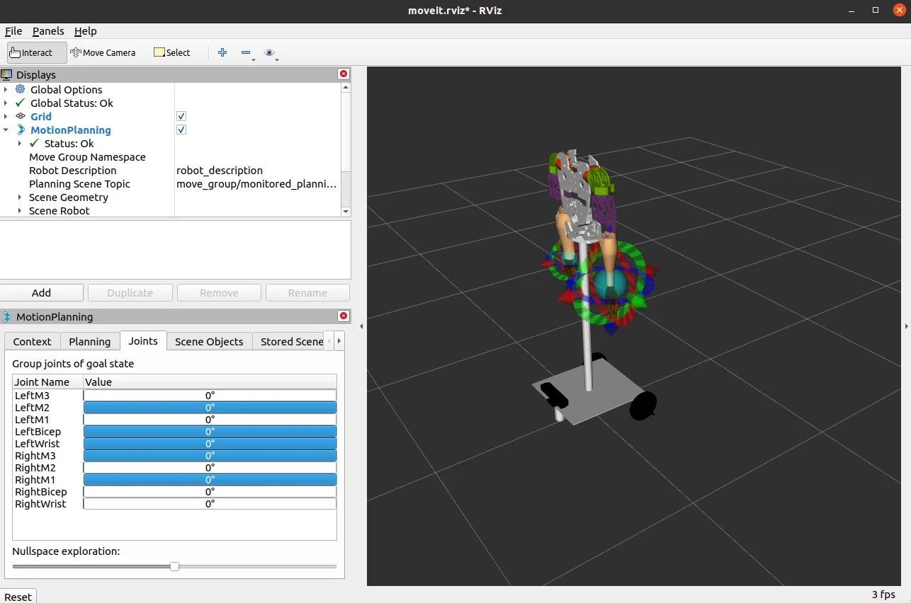

KAREM WALED / ROBOTICS INTEGRATIONFEATURED / ROBOTICS · 2022
Karem Waled ×
InMoov Humanoid
A life-size, 3D-printed assistive robot bringing together articulated motion, a mobile base, perception, and a ROS software system.
- Project
- InMoov Autonomous Humanoid Robot
- My contribution
- Karem Waled: embedded motion, calibration, subsystem integration, and ROS/OpenCV experiments.
- Context
- Ain Shams University · Team graduation project